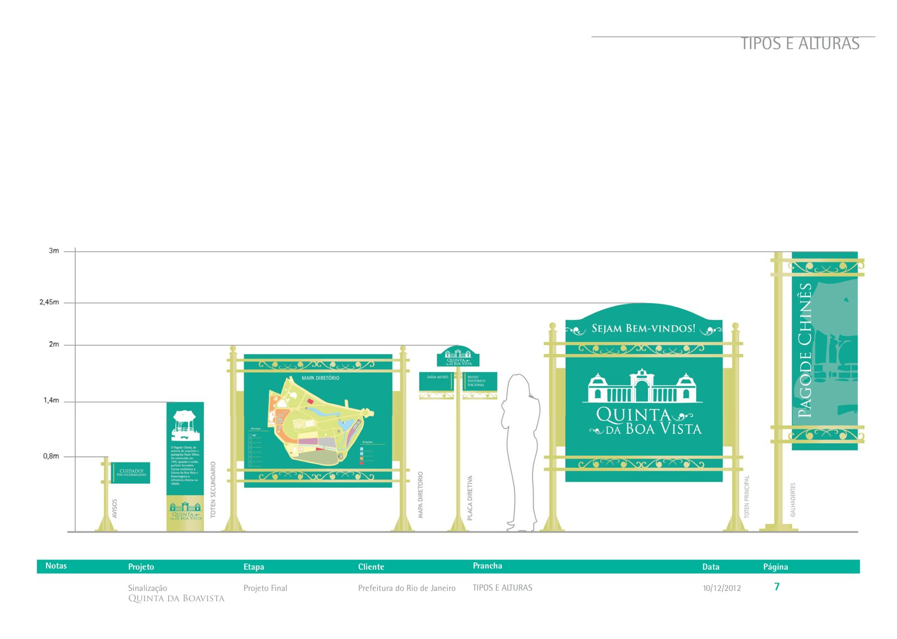
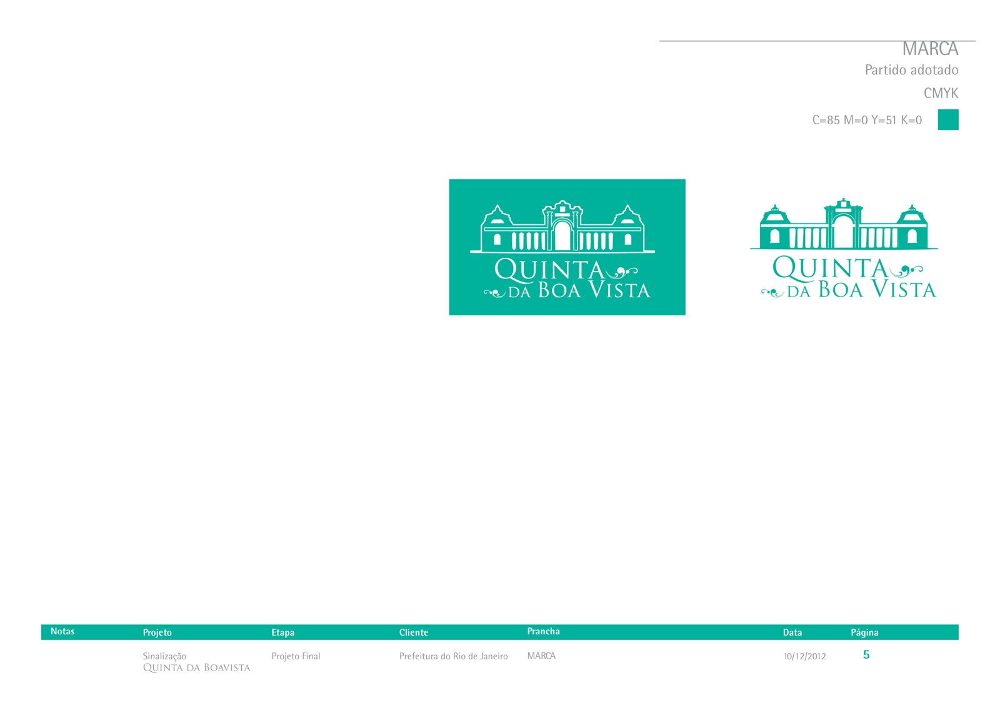
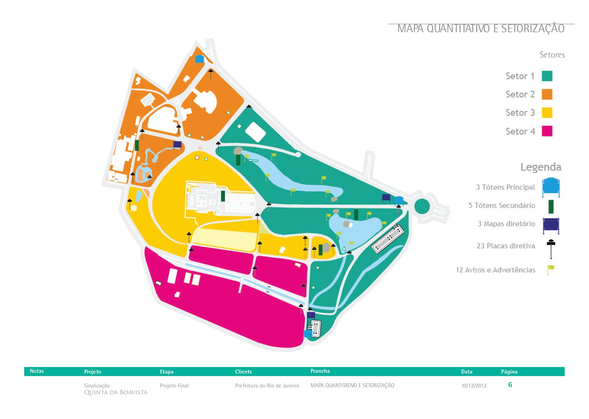
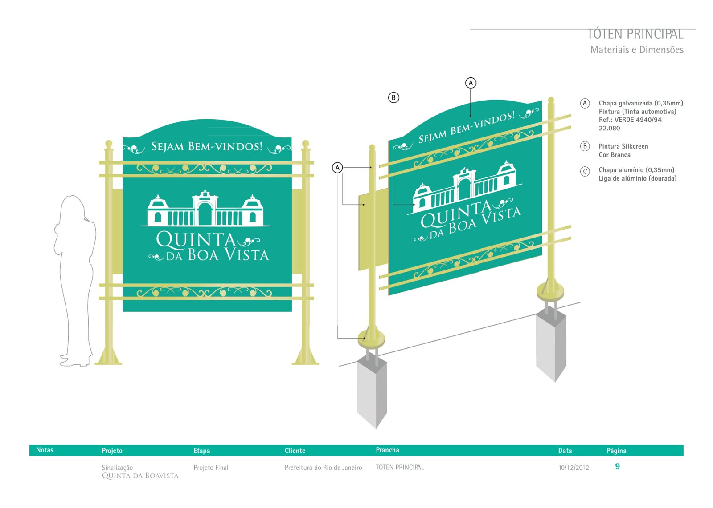
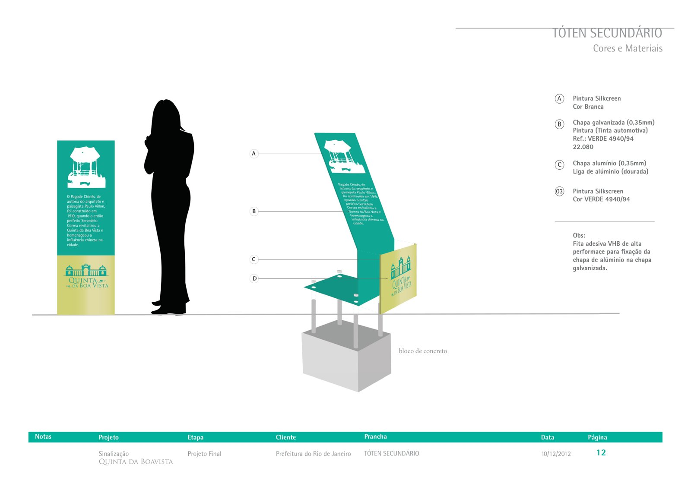
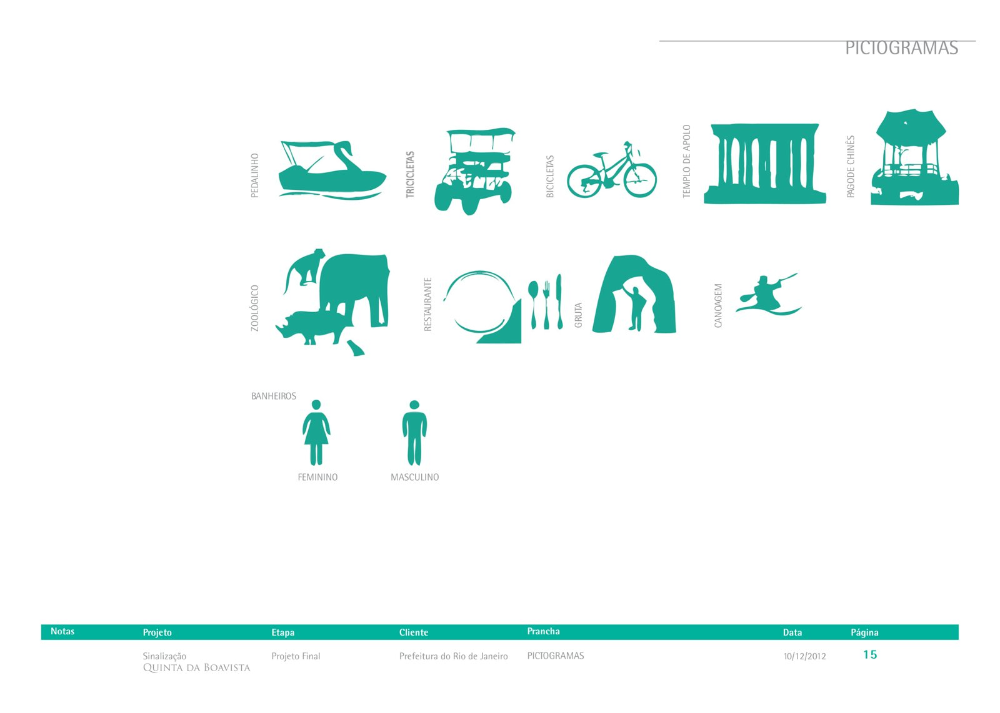

Um sistema de sinalização para um dos parques mais visitados do Rio. Tótens, mapas e pictogramas que orientam o visitante e contam a história do lugar com a mesma linguagem da marca.

A Quinta da Boa Vista foi chácara jesuíta, residência da família real e paisagem desenhada por Glaziou. Hoje abriga zoológico, museu, lagos e quiosques, e recebe todo tipo de visitante.
O projeto parte dessa história: a sinalização precisava ser clara para quem chega pela primeira vez e, ao mesmo tempo, respeitar o caráter imperial do parque.
O desenho do antigo portão e do casarão virou o símbolo. O verde, do jardim, e o dourado, da arquitetura imperial, dão unidade a todas as peças. Tipografia Rotis Semi Sans para leitura e Trajan Pro nos títulos.

O parque foi dividido em quatro setores por cor. Cada peça foi posicionada onde o visitante decide para onde ir.

A peça de entrada tem 2,45 m de altura por 1,68 m de largura. Painel em chapa galvanizada com pintura automotiva, molduras em alumínio dourado e logotipo em silkscreen branco.


Com 1,4 m de altura e inclinação de 30°, o tótem conta a história de cada ponto, como o Pagode Chinês. Base em bloco de concreto e fixação da chapa de alumínio com fita VHB.
Pedalinho, triciclos, bicicletas, Templo de Apolo, Pagode Chinês, zoológico, restaurante, gruta, canoagem e banheiros, todos em silhueta e na cor da marca.

História, público e percursos do lugar.
Identidade, cores e divisão por zonas.
Desenho técnico, materiais e dimensões.
Explosão, fixação e pictogramas.
Condomínios, clínicas, escritórios e parques. Fale com a gente e peça um orçamento.